HackAVP · Emploi Public NC · relevé du 13 septembre 2026
L'outil, écran par écran
Une plateforme qui rassemble les avis de vacance de poste de la fonction
publique calédonienne, traduit ce que les annonces disent en
jargon, justifie chaque rapprochement attendu par
attendu et produit les pièces d'une candidature.
Ce qui suit est l'application telle qu'elle tourne, capturée sur le corpus
réel — pas une maquette.
230
offres en base, dont 189 ouvertes
18
employeurs publics distincts
74 %
des offres ouvertes ne décrivent pas le poste
0 %
de faux positifs à l'évaluation
Acte I
Ce que la page d'accueil promet
Elle ne promet pas un emploi. Elle annonce trois choses vérifiables —
traduire, justifier, dire ce qu'on ignore — et elle affiche, dès le
deuxième écran, le chiffre qui la dessert le plus.
« Les offres publiques, enfin lisibles. »
L'aperçu à droite du titre n'est pas une illustration : c'est
l'écran de rapprochement de l'application, avec son score décomposé
et ses justifications dépliées.
emploi-public.nc
La consultation est libre : missions, compétences attendues et
qualifications sont réservées aux comptes, mais la liste et l'aperçu
des offres ne demandent rien.
Le constat, avant l'argumentaire
Trois chiffres, calculés en direct sur la base. Celui du milieu est
le défaut principal du service — il est en ambre, à la deuxième
section, et non enterré dans une note de bas de page.
emploi-public.nc
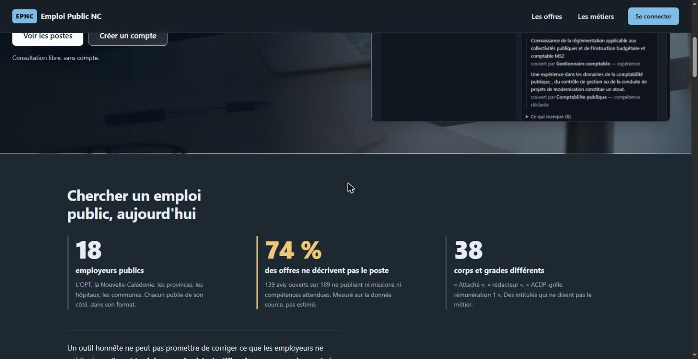
74 % = 139 avis ouverts sur 189 ne publient ni missions ni
compétences attendues. Compté sur les documents en base, pas estimé.
Tout vit dans le PDF de l'avis officiel : ce n'est pas un défaut de
l'adaptateur, c'est la source.
Des situations, pas des témoignages
À l'endroit où une page de vente met un carrousel de témoignages, il
n'y a rien : le service n'a pas encore d'utilisateurs réels, et de
fausses citations au-dessus d'une promesse de « rien d'inventé »
feraient de cette promesse du décor.
emploi-public.nc
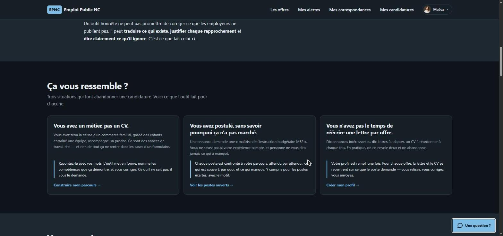
Trois situations à la deuxième personne, chacune suivie de ce que
l'outil fait — au présent, sans conditionnel ni promesse de résultat.
Vous renseignez. L'outil adapte. Le recruteur comprend.
Une seule décision technique produit les deux bénéfices : le profil
est stocké en JSON Resume et le CV est composé à
partir de lui, jamais rédigé en texte libre.
emploi-public.nc
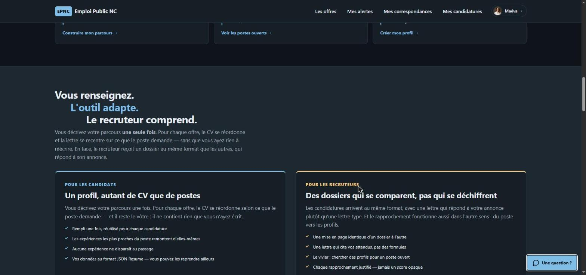
Les deux publics sont côte à côte et à poids égal : l'outil n'a pas un
public principal et un public toléré. Le rapprochement fonctionne dans
les deux sens — du profil vers les postes, et du poste vers le vivier.
Acte II
Ce que les employeurs publient vraiment
Les avis viennent de jeux de données publics, republiés tels quels et
normalisés au format schema.org/JobPosting. Aucune saisie
manuelle, aucune offre ajoutée, aucun contenu réécrit — et, là où la
source est muette, un écran qui le dit.
230 offres, 18 employeurs, un seul format
OPT-NC, Nouvelle-Calédonie, provinces, hôpitaux, communes, Congrès,
ISEE. Chacun publie de son côté, dans son format ; ils arrivent ici
au même.
emploi-public.nc/offres
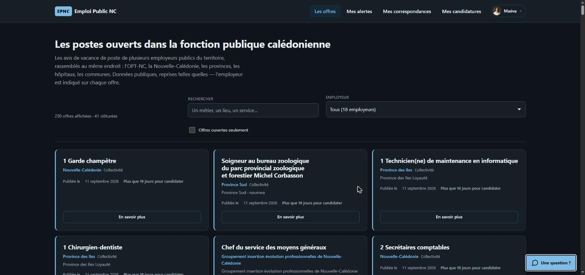
L'employeur est indiqué sur chaque offre, sous son vrai nom. Un
employeur absent du registre n'est jamais rangé dans « Autre ».
Deux sources, un seul schéma : un seul fichier
(avpNormaliser.js) connaît la forme d'origine. Le
JSON-LD reçu est conservé intact et ressort tel quel sur
GET /api/avps/:slug/jobposting.
Le jargon traduit — et la réserve affichée avec
« ACDP-Grille rémunération 2-Diplôme niveau V » devient « poste
contractuel, niveau CAP-BEP ». La traduction est posée
à côté du libellé officiel, jamais à sa place.
emploi-public.nc/offres/23-1353
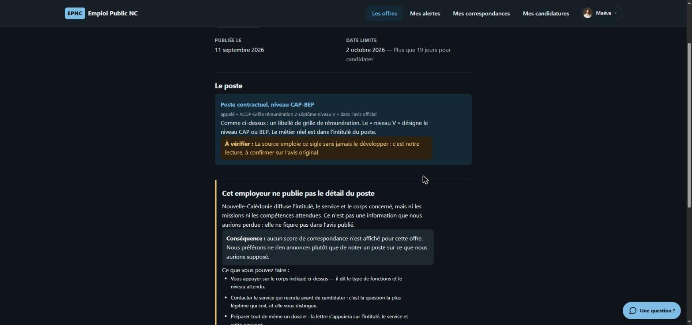
« À vérifier » : la source emploie ce sigle sans jamais le
développer. C'est une lecture, pas une certitude, et l'écran le dit
— 38 corps et grades sont couverts, chacun marqué comme établi ou
partiel.
« Cet employeur ne publie pas le détail du poste » → conséquence
assumée : aucun score n'est affiché pour cette offre.
Mieux vaut ne rien annoncer que noter un poste sur ce qu'on aurait
supposé. L'écran propose alors ce qui reste faisable : s'appuyer sur
le corps, appeler le service, préparer quand même un dossier.
Acte III
Entrer un parcours sans avoir de CV
Le hackathon insiste sur le candidat sans CV. Trois portes
d'entrée existent donc : le formulaire, l'import d'un JSON Resume,
et un entretien qui pose les questions à la place du formulaire.
« Racontez-le avec vos mots »
Un emploi, mais aussi un stage, du bénévolat, un coup de main dans
l'entreprise d'un proche, s'occuper de quelqu'un, encadrer une
équipe sportive. « L'orthographe n'a aucune importance ici. »
emploi-public.nc/entretien
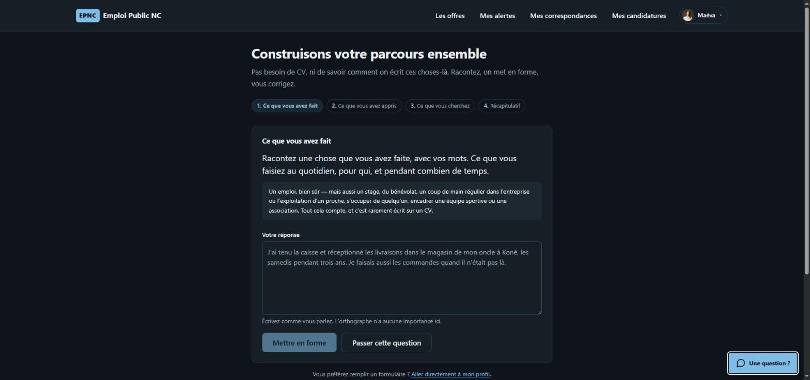
Quatre étapes : ce que vous avez fait, ce que vous avez appris, ce que
vous cherchez, récapitulatif. Chaque question peut être passée.
« Voici ce que j'ai compris » — à corriger
Le texte brut devient une expérience structurée et une
liste de compétences, chacune rapprochée du vocabulaire que les
offres emploient réellement. Rien n'est enregistré sans validation.
emploi-public.nc/entretien
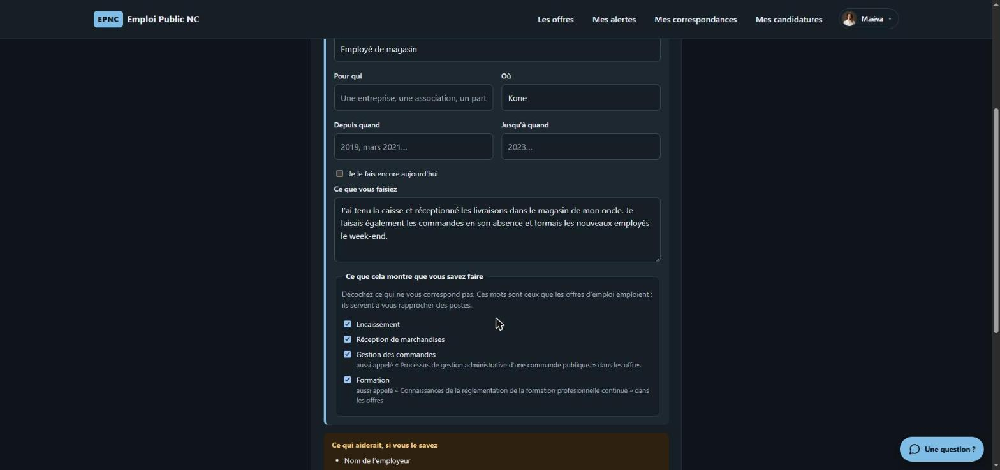
« Tenir la caisse du magasin de mon oncle » devient
Encaissement, Réception de marchandises,
Gestion des commandes, Formation — et chacune
indique sous quel libellé les annonces la nomment.
Aucun fait n'est ajouté : ce qui manque (le nom de l'employeur, les
dates) est demandé dans un encadré « Ce qui
aiderait, si vous le savez », jamais deviné. Les cases sont
décochables : c'est une proposition, pas un verdict.
Acte IV
Le rapprochement, et ce qu'il refuse de noter
Le score se formule dans un vocabulaire public et opposable — le
référentiel métiers de l'OPT-NC — jamais en similarité opaque. Quatre
composantes, 100 points, ramenés aux composantes applicables.
Chaque point pointe vers deux extraits
L'attendu de l'annonce d'un côté, l'élément du parcours qui le
couvre de l'autre. Les écarts sont listés aussi, et le nombre
d'attendus non couverts est écrit.
emploi-public.nc/matchs
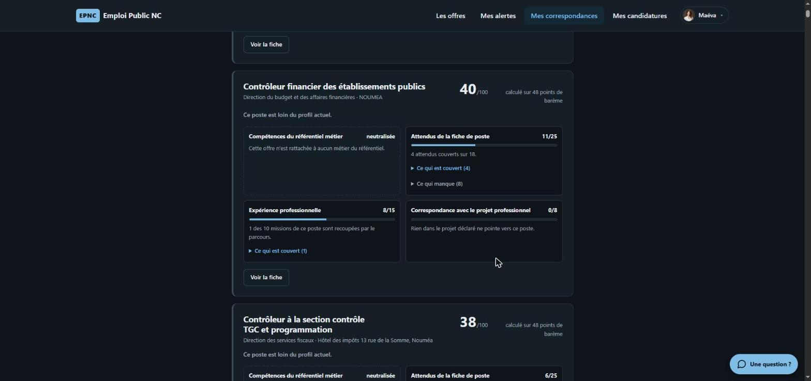
« 40/100, calculé sur 48 points de barème » : la fiabilité du score
est affichée. Sous 40 points applicables, le poste est marqué
non évaluable plutôt que noté sur du vide.
Les contraintes dures filtrent, elles ne pondèrent pas :
quelqu'un sans le permis exigé ne doit pas apparaître à 62 %, il ne
doit pas apparaître — et les écartés sont renvoyés à part, avec leur
motif.
Une composante neutralisée, avec le motif
L'offre annonce « Chargé d'études juridiques », mais son code OP007
correspond à « Chargé d'études marketing » au référentiel. Les deux
divergent : la composante est neutralisée plutôt que de noter un
profil juridique sur des compétences marketing.
emploi-public.nc/matchs
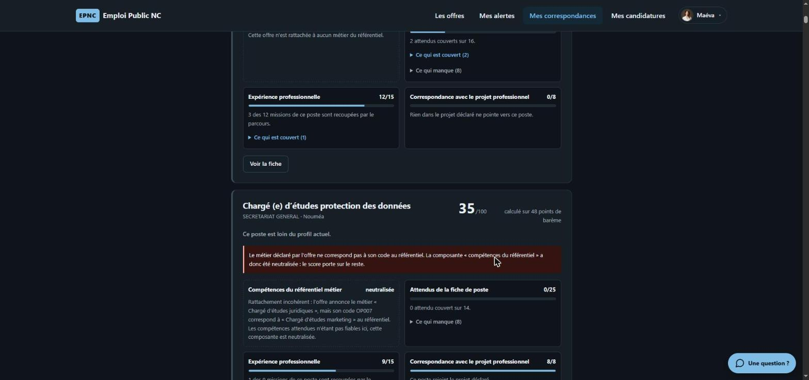
Neutralisée, pas mise à zéro : une donnée manquante ou incohérente
côté employeur ne doit pas pénaliser le candidat.
Évaluation sur vérité terrain étiquetée à la main (8 personas × familles
de postes, 89 paires mesurées, 13/09/2026) :
exactitude 45 %, faux positifs 0 %, faux négatifs 88 %.
Le moteur rate des rapprochements justes plutôt que d'en inventer —
l'arbitrage est assumé, pas subi.
Acte V
Les pièces, et leur relecture
Quatre pièces : la lettre et le CV partent chez l'employeur ; l'analyse
du rapprochement et la préparation à l'entretien restent pour le
candidat. Un second appel au modèle relit la lettre « en recruteur »
avant qu'elle ne soit proposée.
La production est annoncée, deux fois
Un bandeau au-dessus du dossier, un second sur chaque pièce. « Rien
ne part en votre nom sans que vous l'ayez relu et validé — c'est
vous qui signez cette candidature. »
emploi-public.nc/candidatures/…
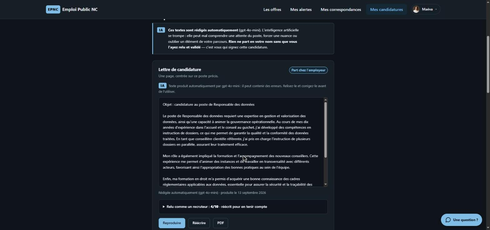
Les pièces destinées à l'employeur ne portent, elles, aucune
mention de la façon dont elles ont été produites : ni titre d'outil,
ni pied de page. C'est le règlement.
Ce que la passe de critique a retiré
La note du relecteur est affichée au candidat, et le détail se
déplie : voici les phrases que le modèle avait écrites et que le
profil ne soutenait pas.
emploi-public.nc/candidatures/…
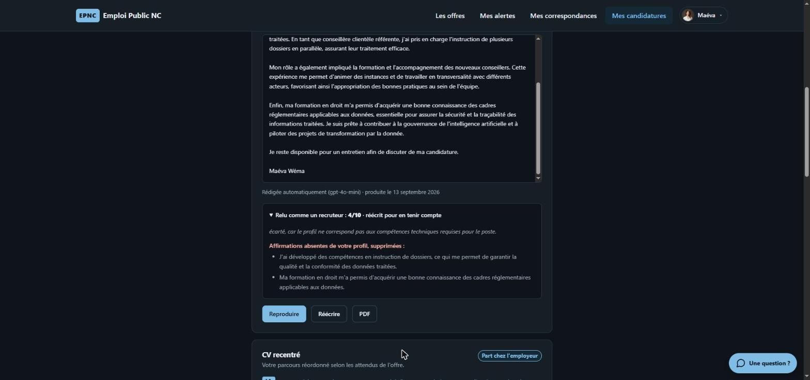
Mesuré : la lettre passe de 4/10 à 6/10 à la passe
de critique. Sous le seuil, ou dès qu'une invention est signalée,
une réécriture est produite, renotée, et la
meilleure des deux versions est gardée.
Longueur médiane des lettres : 231 mots pour une
cible de 250-300. Le plan en quatre paragraphes a fait passer la
médiane de 175 à 231, puis un plafond du modèle subsiste. Caractérisé,
pas résolu.
Acte VI
Ce que la personne accepte de partager
Le vivier met des parcours, des coordonnées et des CV de personnes
réelles à disposition d'employeurs. Y figurer est une décision séparée,
explicite, datée et réversible — jamais un effet de bord de
l'inscription.
La liste exacte, dépliée avant la décision
Quatre groupes : ce qu'un recruteur voit dès la liste de recherche,
ce qui n'apparaît qu'en ouvrant la fiche, ce qu'il peut en faire, et
ce qui ne sort jamais.
emploi-public.nc/profil
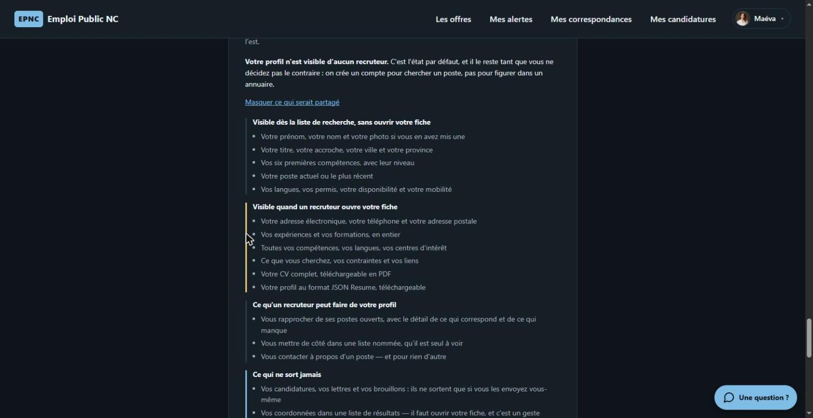
Rien n'est replié derrière un « en savoir plus » : cacher ce sur quoi
on demande un accord est le contraire d'un consentement éclairé.
La liste vient du serveur, du même endroit que le code qui
l'applique. Elle nomme ce qu'une phrase générale laissait de côté :
la photo dès la liste, le CV en PDF,
l'export JSON Resume, et le rapprochement du profil
avec les postes du recruteur, écarts compris.
L'accord est daté, et le retrait aussi
« Votre profil est consultable par les recruteurs depuis le
13 septembre 2026. » Accepter demande deux gestes ; retirer en
demande un seul, sans confirmation et sans justification.
emploi-public.nc/profil
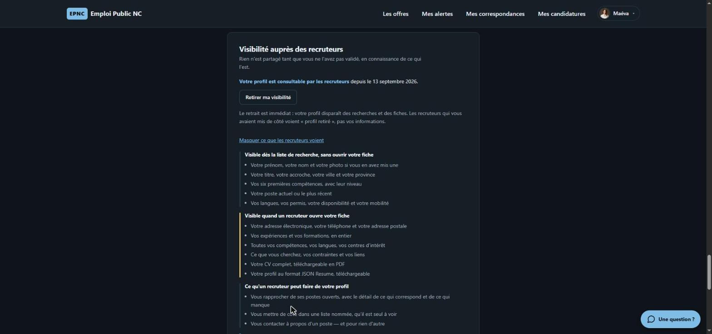
La garde est côté serveur : PUT /api/profilrefuse une activation qui ne porte pas la version
du texte accepté. Un import, un script ou un futur écran distrait ne
peuvent pas exposer quelqu'un à qui rien n'a été montré.
Si la liste change, les accords antérieurs sont signalés et il est
demandé de relire — mais le profil n'est pas masqué
d'office : faire disparaître quelqu'un d'un vivier sans qu'il l'ait
demandé serait une décision prise à sa place.
À l'inscription : ce qui sort, dit avant
La case n'est pas pré-cochée et le bouton reste inactif tant qu'elle
ne l'est pas. Le texte dit les deux choses qui comptent : le profil
n'est visible d'aucun recruteur par défaut, et la rédaction assistée
transmet le profil à un prestataire tiers.
emploi-public.nc/inscription
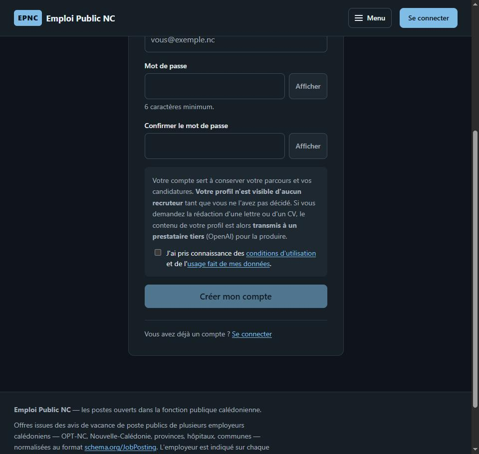
Capture prise en affichage étroit : la mise en page est déclinée du
mobile vers le bureau, et le menu se replie sous 1100 px — mais jamais
l'identité ni « Se connecter ».
Un service indépendant, et qui le dit en premier
Aucun lien officiel avec l'OPT-NC, la Nouvelle-Calédonie, les
provinces ni aucun employeur dont le service republie les avis.
Aucune candidature reçue ni transmise pour leur compte.
emploi-public.nc/mentions-legales
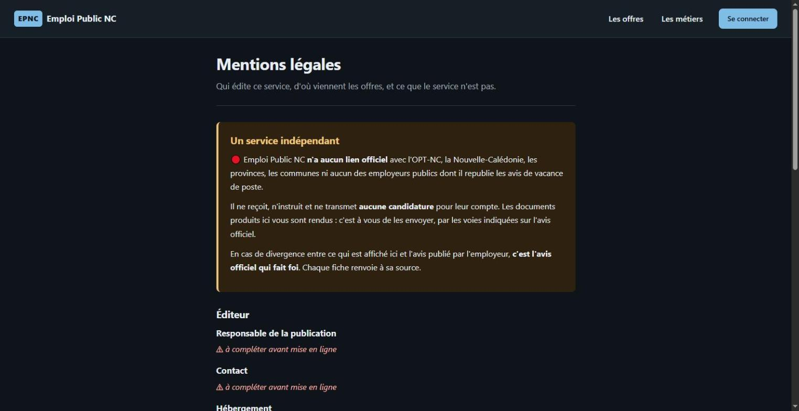
Trois champs sont affichés « à compléter avant mise en ligne »
plutôt que remplis d'un nom plausible. Un faux responsable de
publication dans des mentions légales est pire qu'une mention
manquante : il désigne quelqu'un qui n'existe pas.
Le tiers, annoncé en première section
La plupart des outils de cette catégorie enterrent cette
information en bas de page. Elle est ici la première chose qu'on
lit, parce que c'est la seule qui peut faire changer d'avis
quelqu'un avant de saisir son parcours.
emploi-public.nc/confidentialite
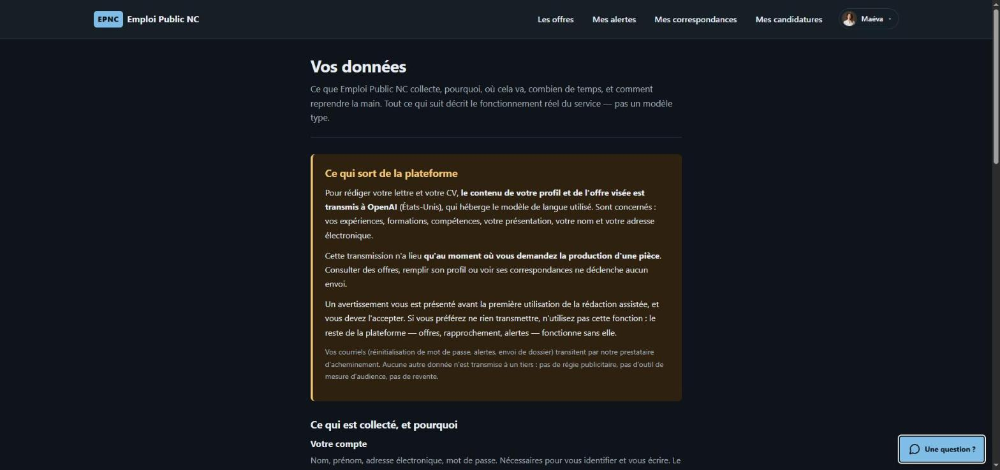
« Cette transmission n'a lieu qu'au moment où vous demandez la
production d'une pièce. » Consulter des offres, remplir son profil ou
voir ses correspondances ne déclenche aucun envoi — et le reste de la
plateforme fonctionne sans cette fonction.
Ce que l'outil ne fait pas
Un outil honnête ne peut pas promettre de corriger ce que les employeurs
ne publient pas. Il peut traduire ce qui existe, justifier chaque
rapprochement, et dire clairement ce qu'il ignore. Les réserves ci-dessous
sont les nôtres, mesurées, et elles figurent aussi dans le dépôt.
Réserves
74 % des offres ouvertes ne sont pas notables. Trois
correctifs plausibles ont été essayés et écartés par la mesure :
jointure ROME, inférence ROME, rapprochement par libellé. Aucun ne
tenait sur la donnée réelle.
Rappel de 12 % à l'évaluation. Le moteur est prudent
par construction : il rate des rapprochements justes plutôt que d'en
inventer. Zéro faux positif est le critère qui a été privilégié.
Lettres à 231 mots de médiane pour une cible de
250-300 ; 14 % seulement atteignent la cible. Le levier non essayé est
un modèle plus capable que gpt-4o-mini.
Accessibilité : 0 violation axe-core sur 9 écrans,
mais axe ne voit pas tout — la relecture au lecteur d'écran des écrans
de rapprochement reste à faire.
Le cadrage juridique des pages légales doit être validé par un
juriste : la Nouvelle-Calédonie n'est pas soumise au RGPD dans
les mêmes termes que la métropole.
Captures prises le 13 septembre 2026 sur l'application en fonctionnement,
corpus réel (230 offres, 189 ouvertes, 18 employeurs). Les profils
utilisés en démonstration sont fictifs. Aucune adresse de recrutement
réelle n'est joignable par le code.